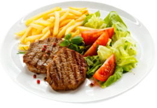

¿Qué es la Cocina?
La cocina(o arte culinario) es el arte y la habilidad de preparar alimentos para su consumo. Es una actividad que combina técnicas culinarias, conocimiento de ingredientes, creatividad y destreza manual para crear platos sabrosos y atractivos visualmente.
La cocina, algo que existe desde la prehistoria, posiblemente despues del fuego, cuando el ser humano cazaba su comida y la ponia al fuego para que tubiera una mejor sabor, desde ese punto, empezo lo que conocemos como cocina
Además de la preparación de los alimentos, la cocina también implica la planificación de menús, el conocimiento de las propiedades nutritivas de los ingredientes, la manipulación segura de los alimentos para garantizar la higiene y la salud, y la presentación estética de los platos.
Y claro, la cocina no solo va de alimentos, sino que las bebidas entran también en el ámbito de la cocina, ya que la bebida es necesaria para la digestión de la comida, hay bebidas de frutas, con alcohol, energizantes, etc.
Si quieres aprender a hacer un café frío buenísimo te dejo el tutorial :D.
Ir
Tipos de Cómida
La cocina abarca una amplia gama de prácticas y estilos culinarios, que varían según las culturas, regiones y tradiciones culinarias. Puede incluir la selección de ingredientes frescos y de calidad, el uso de técnicas de cocción como asar, hervir, freír o hornear, así como la incorporación de condimentos y especias para realzar los sabores.
La cocina puede ser tanto un acto doméstico como una profesión. Muchas personas disfrutan de cocinar en casa como una forma de expresión personal, para compartir momentos con la familia y los amigos, o como un hobby creativo. Por otro lado, hay chefs profesionales que se dedican a la cocina de forma más especializada, trabajando en restaurantes, hoteles u otros establecimientos de alimentos y bebidas.
Estos, aparte de llegar a ser reconocidos a nivel mundial, muchos de ellos tienen algo llamado "Estrella Michelin", lo cual se concede a un restaurante, normlamente de un chef de alto nivel, que acreditan a cierto plato como un plato de máximo nivel creado con ingredientes de alta calidad.
Por ejemplo, Gordon Ramsay es un chef conocido mundialmente, dueño de múltiples restaurantes y
presentador de diferentes programas de televisión.

A lo largo de su carrera como chef ha sido condecorado con 17 estrellas Michelin, Es el tercer cocinero del mundo en número de estrellas, sólo superado por Joël Robuchon, con 31, y Alain Ducasse, con 19.
Gastronomía
A menudo se cree erróneamente que el término gastronomía únicamente tiene relación con el arte culinario, pero no es así, la Gastronomía es el arte que estudia la relación del ser humano con su alimentación.
El gastrónomo es el individuo que se preocupa por este arte y no obligatoriamente tiene que ser un cocinero. La gastronomía estudia varios componentes culturales, tomando como eje central la comida.
A lo largo de los años han surgido diferentes tipos de gastronomías, como la vegana, que surge de la gente que no le gusta comer algo proveniente de un animal, la nacional que es una que depende de cada país, ya que cada país tiene su tipo de gastronomía.

En resumen, la cocina es mucho más que la simple preparación de alimentos. Es una combinación de arte, ciencia y cultura que nos permite alimentarnos, conectar con los demás, explorar nuevos sabores, culturas y experiencias, es una actividad/profesión bastante buena y entretenida que sin duda puede traer un cambio a nuestras vidas.